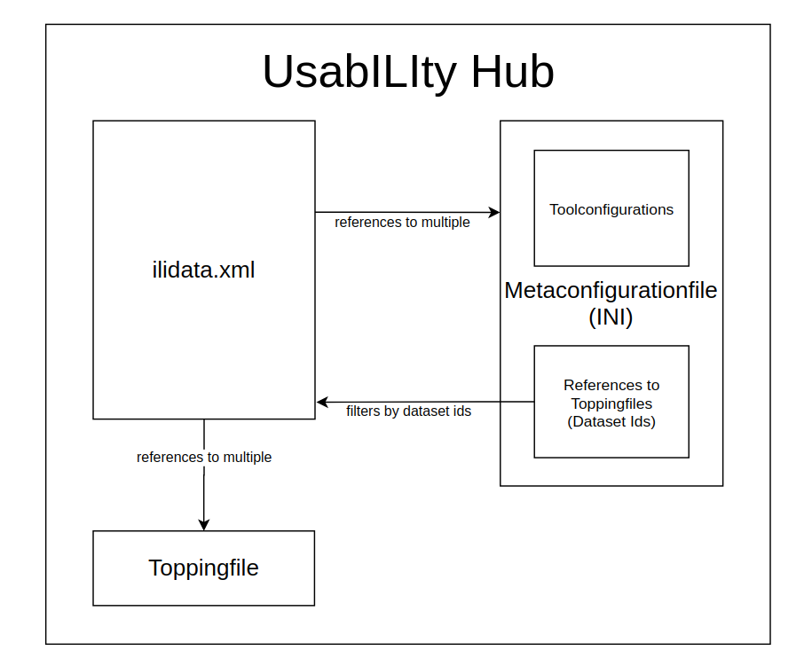

Technical Concept
The idea of the UsabILIty Hub is to receive additional information for implemented INTERLIS models automatically via the web. Just as we can get models by linking the ilimodels.xml file from http://models.interlis.ch and the linked repositories, we can get the additional information with the ilidata.xml file on the UsabILIty Hub (currently https://models.opengis.ch) and the linked repositories.
Settings for tools (like ili2db or Model Baker) are configured in a metaconfiguration file, as well as links to topping files that contain information about GIS project (such as symbologies or legend structures). Thus, this additional information usually consists of a metaconfiguration and any number of toppings.

The ilidata.xml
An ilidata.xml serves as an index for all required additional information. The file is based on the DatasetIdx16 model.
It contains the class (elements) DatasetMetadata. There are files referenced that are on the same server/repository as the ilidata.xml.
Additional servers/repositories can be linked via the ilisite.xml. The DatasetMetadata are identified by a cross-system (cross-repository) DatasetMetadata-Id. It is up to the user what this id is.
Example of a DatasetMetadata element
<DatasetIdx16.DataIndex.DatasetMetadata TID="be6623c1-aa64-4a07-931e-fc4f0745f025">
<id>ch.opengis.ili.config.KbS_LV95_V1_4_config_V1_0</id>
<version>2021-01-06</version>
<owner>mailto:david@opengis.ch</owner>
<title>
<DatasetIdx16.MultilingualText>
<LocalisedText>
<DatasetIdx16.LocalisedText>
<Language>de</Language>
<Text>Einfaches Styling und Tree (OPENGIS.ch)</Text>
</DatasetIdx16.LocalisedText>
</LocalisedText>
</DatasetIdx16.MultilingualText>
</title>
<categories>
<DatasetIdx16.Code_>
<!-- dieser Eintrag betrifft das Modell KbS_LV95_V1_4 -->
<value>http://codes.interlis.ch/model/KbS_LV95_V1_4</value>
<!-- Konvention: http://codes.interlis.ch/model/{MODELNAME} -->
</DatasetIdx16.Code_>
<DatasetIdx16.Code_>
<!-- dieser Eintrag betrifft eine Metakonfigurationsdatei -->
<value>http://codes.interlis.ch/type/metaconfig</value>
<!-- fix Wert fuer Metaconfigs -->
</DatasetIdx16.Code_>
<DatasetIdx16.Code_>
<!-- Codes können auch generisch sein -->
<value>http://codes.opengis.ch/modelbaker</value>
<!-- müssen aber eine URL sein -->
</DatasetIdx16.Code_>
</categories>
<files>
<DatasetIdx16.DataFile>
<fileFormat>text/plain</fileFormat>
<file>
<DatasetIdx16.File>
<path>metaconfig/opengisch_KbS_LV95_V1_4.ini</path>
<!-- realtiver Pfad (zu ilidata.xml) der Metaconfig Datei -->
</DatasetIdx16.File>
</file>
</DatasetIdx16.DataFile>
</files>
</DatasetIdx16.DataIndex.DatasetMetadata>
Filtering
The categories element in the DatasetMetadata contains a list of Code_ elements. These can be used for filtering. In the context of the UsabILIty Hub, the following two categories are primarily used.
Model
The category for the model is identified with the prefix http://codes.interlis.ch/model/ and contains the model name.
<DatasetIdx16.Code_>
<value>http://codes.interlis.ch/model/KbS_LV95_V1_4</value>
</DatasetIdx16.Code_>
Type
The category for the file type is identified with the prefix http://codes.interlis.ch/type/ and contains the type in question.
<DatasetIdx16.Code_>
<value>http://codes.interlis.ch/type/metaconfig</value>
</DatasetIdx16.Code_>
In the UsabILIty Hub implementation of the Model Baker, the following types are used:
- metaconfig to describe that it is a metaconfiguration file.
- metaattributes to describe that it is a meta attribute file written in TOML or INI.
- sql to describe that it is a SQL query file that can be used when creating the database
- projecttopping to describe that it is a toppingfile that defines a qgis project setting (includes the full layertree implementation and replaces that)
- layerstyle to describe that it is a toppingfile that can contain styling and form configurations for a QGIS layer written in QML
- layerdefinition to describe that it is a toppingfile that can contain the definition of a QGIS layer written in QLR
- referenceData to describe that it is a data file (e.g. a transfer file or a catalog)
Generic
However, the content of the Code_ element is not strictly defined. As long as it is a URL, it is up to the tool developer how she wants to use it.
At the moment the Model Baker does not use generic categories.
The ilisite.xml
The ilisite.xml is based on the model IliSite09. It contains the class (elements) SiteMetadata where URLs to other repositories are defined. These repositories in turn manage an ilimodel.xml or - likewise - an ilidata.xml.
Thus, models can be found across multiple repositories and so can metaconfigurationfiles and/or toppingfiles.
Example of a IliSite09 element
<IliSite09.SiteMetadata.Site TID="1">
<Name>usability.opengis.ch</Name>
<Title>Allgemeine metadaten für ili-modelle</Title>
<shortDescription>Weitere Sites des UsabILItyHubs</shortDescription>
<Owner>http://models.opengis.ch</Owner>
<technicalContact>mailto:david@opengis.ch</technicalContact>
<subsidiarySite>
<IliSite09.RepositoryLocation_>
<value>usabilitydave.signdav.ch</value>
</IliSite09.RepositoryLocation_>
</subsidiarySite>
</IliSite09.SiteMetadata.Site>
The Metaconfiguration File (ini)
A metaconfigurationfile is an ini file that contains configurations for one or more tools. Likewise, topping files and other files belonging to the configuration can be referenced in this metaconfiguration file.
File References
The files are either referenced by a cross-system-wide DatasetMetadata-Id or they can be referenced by a static file path.
DatasetMetadata Id
When a file is referenced by a DatasetMetadata-Id, it means that the ilidata.xml are parsed across repositories to find the linked file. This means that the metaconfiguration cannot only reference files on the same repository/server. Prefix for DatasetMetadata-Ids is ilidata:.
It is generally recommended to use the DatasetMetadata-Id for a reference to a file (instead of the static file path).
Static File Path
Static file path links referenced with file: can be both absolute and relative. However, it may depend on the tool used to what the path is relative. Therefore this should only be used for testing purposes.
The Model Baker handles relative paths relative to itself. ili2db on the other hand relative to the directory where ili2db is started.
[CONFIGURATION]
baseConfig=ilidata:remoteBaseConfigBasketId;ilidata:otherRemoteBaseConfigBasketId;path/otherBaseConfigLocalFile
org.interlis2.validator.config=ilidata:ilivalidatorConfigBasketId
qgis.modelbaker.projecttopping=ilidata:ch.opengis.config.KbS_LV95_V1_4_projecttopping
ch.interlis.referenceData=ilidata:ch.opengis.config.KbS_Codetexte_V1_4
[ch.ehi.ili2db]
defaultSrsCode = 2056
smart2Inheritance = true
strokeArcs = false
importTid = true
createTidCol = false
models = KbS_Basis_V1_4
preScript=ilidata:ch.opengis.config.KbS_LV95_V1_4_prescript
iliMetaAttrs=ilidata:ch.opengis.config.KbS_LV95_V1_4_toml
[qgis.modelbaker.qml]
"Belasteter_Standort (Geo_Lage_Polygon)"=file:toppings_in_modelbakerdir/layerstyle/opengisch_KbS_LV95_V1_4_001_belasteterstandort_polygon.qml
"Belasteter_Standort (Geo_Lage_Punkt)"=ilidata:ch.opengis.topping.opengisch_KbS_LV95_V1_4_001
ZustaendigkeitKataster=ilidata:ch.opengis.configs.KbS_LV95_V1_4_0032
For example, the id ch.opengis.configs.KbS_LV95_V1_4_projecttopping references a DatasetMetadata that contains a link to a yaml file where the project settings like the legend structure is defined. The id ch.opengis.configs.KbS_LV95_V1_4_001 points to a DatasetMetadata element which contains a link to an qml file for QGIS style and form configurations.
Whole sections can also be defined. The section qgis.modelbaker.qml contains besides the link also the mapping of layer names to qml files. The mapping in the metaconfigurationfile is deprecated. This should be done in the project topping file.
Tool Prefix
In the metaconfiguration file entries can be marked with a tool prefix. ili2db for example uses the prefix ch.ehi.ili2db and the Model Baker uses the prefix qgis.modelbaker. However, it is up to the tool which configurations it uses. The prefix ch.interlis, which is used with ch.interlis.referenceData for example for the reference to data files like catalogs or transfer data files, is used by ili2db as well as the Model Baker.
References to other Metaconfiguration Files
It is also conceptually possible (although not yet implemented by tools like the Model Baker) that one can link from one metaconfiguration file to other metaconfiguration files using the baseConfig entry. Thus a kind of "inheritance" of the configuration would be possible.
Topping Files
Topping files are files that are referenced by the metaconfiguration and contain the configuration information of a GIS project. They can be form configurations, style attributes, legend display and order, as well as catalogs, transfer files and other data files. Individual topping files can be used for each tool. From a simple zip file containing the whole project to a careful mapping of layer names to qml style files.
Example of a Projecttopping File (yaml) of the Layertree in QGIS
layertree:
- 'top-group':
group: true
checked: true
expanded: true
mutually-exclusive: true
mutually-exclusive-child: -1
child-nodes:
- 'geom punkt':
group: false
definitionfile: "ilidata:ch.opengis.topping.opengisch_KbS_LV95_V1_4_005"
- 'geom polygon':
group: false
checked: true
qmlstylefile: "ilidata:ch.opengis.topping.opengisch_KbS_LV95_V1_4_005"
- 'subgroup':
group: true
child-nodes:
- 'subsubgroup':
group: true
checked: true
child-nodes:
- 'baum':
group: false
checked: true
- 'subsubsubgroup':
group: true
checked: true
child-nodes:
- 'another layer':
group: false
checked: false
- 'layer in the subgroup':
group: false
checked: false
- "Map":
provider: "wms"
uri: "contextualWMSLegend=0&crs=EPSG:2056&dpiMode=7&featureCount=10&format=image/jpeg&layers=ch.bav.kataster-belasteter-standorte-oev_lines&styles=default&url=https://wms.geo.admin.ch/?%0ASERVICE%3DWMS%0A%26VERSION%3D1.3.0%0A%26REQUEST%3DGetCapabilities"
layerorder:
- 'geom punkt'
- 'geom polygon'